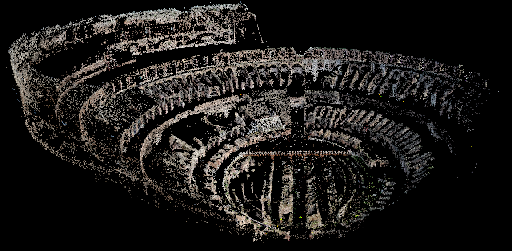
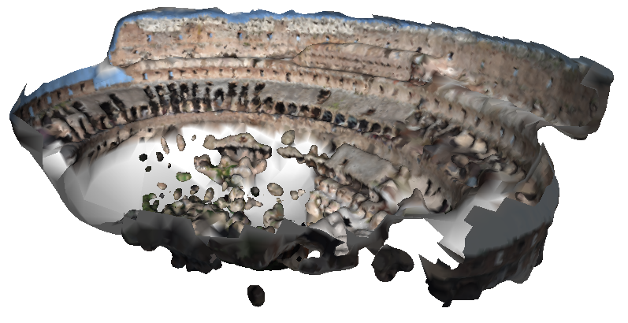

Back to homepage
Photosynth.net
Photosynth is a cool Microsoft
website to browse your photo collection in 3D. It is based on a work from a
research team of the University of Washington and Microsoft Research:
Photo Tourism.
All papers published by this team are freely availble on the web, as well
as part of their code: Bundler.
Using this script, I fetched 82 original pictures
from Flickr (original so that we have their EXIF tags, as well as high
quality), then let bundler run for a day. In the end, I obtained the
recovered camera parameters for most of these photos, as well as this
amazing point cloud:

( here is a PLY reader for VTK I wrote
especially for Bundler )
You can view this point cloud in your browser using WebGL here.
I coded a simple
VTK/Python viewer for the Bundler output inspired from a
viewer for the Voodoo
output written by D. Doria.
PixelStruct
is a viewer for the Bundler output worth mentionning as it places the
images in the average plane of the observed points.
Once we have recovered the set of parameters for our images, we can run
the CMVS/PMVS
softwares to obtain a cloud points with normals (which took one more
day on my laptop), then we
can do a Poisson reconstruction in Meshlab:

I merged the Bundler/PMVS/CMVS scripts (RunBundler.sh,prep pmvs.sh and CMVS and PMVS commands) into one single file.